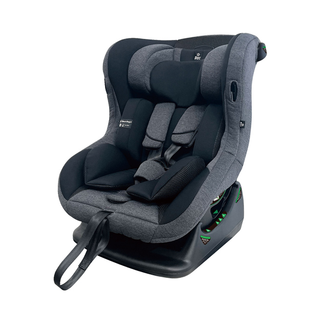
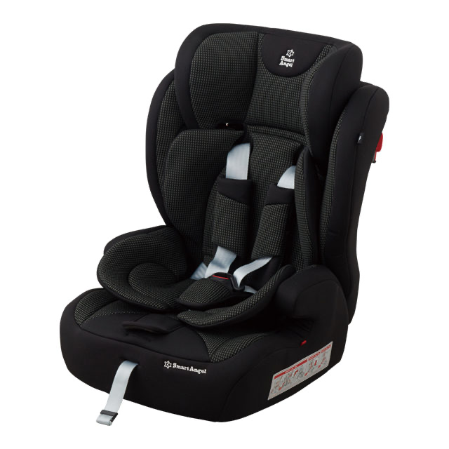
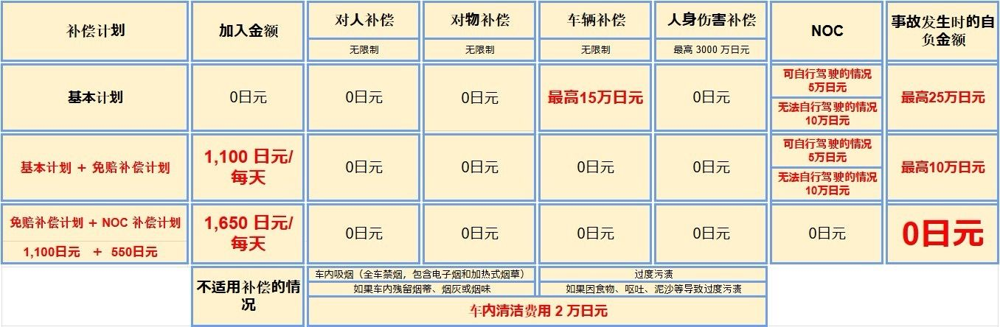

【ご予約について】
Q予約はどうやって行えばよいですか？
ご予約はオンラインでのみ受け付けております。公式サイトでご希望の車種と日程を選び、カレンダーからご利用日をお選びください。
お支払いは、クレジットカードでの事前決済です。決済が完了すると届くメールに利用規約が添付されていますので、電子サインをしていただいた時点でご契約完了となります。
Q電話で予約することはできますか？
ご予約は、原則としてインターネットからのみお受けしております。わからない点がございましたら、お電話でもご説明いたします。
Q予約はいつから受け付けていますか？
ご利用開始日の180日前（約6か月前）からご予約いただけます。時期や車両によっては前後することがございます。
Q当日の予約もできますか？
はい、可能です。ただし台数に限りがあるため、繁忙期や連休中にご利用の場合は、早めのご予約をおすすめします。当日のご予約はお電話でお受けしております。
Q予約をしていなくても借りられますか？
当日に空いている車両がある場合のみ、ご利用いただけます。ご希望の車種をご用意できないこともございますので、事前のご予約をおすすめします。
Qグループや団体でも利用できますか？
はい、ご利用いただけます。無料送迎バスには、お荷物を含めて20名までご乗車可能です。複数台をご予約の場合、送迎は代表者の方のみとさせていただくことがございます。
Q利用するための条件はありますか？
次の条件をすべて満たす方に限り、ご利用いただけます
(1) 満18歳以上の方
(2) 運転免許を取得してから6ヶ月以上経過している方
(3) 過去2年以内に重大な事故・重大な違反のない方
(4) 当社の利用規約にご同意いただける方
(5) スマートフォンなど、インターネットに接続できる端末をお持ちの方
【変更・キャンセルについて】
Q予約した日程や内容を変更したいのですが
ご出発の7日前までであれば、いったんご予約をキャンセルしたうえで、あらためてご予約ください。6日前以降はキャンセル料がかかります。変更をご希望の場合は、店舗または公式LINEへご相談ください。
Qキャンセル料はかかりますか？
以下のとおり頂戴いたします。
・6〜3日前：20％
・2〜1日前：30％
・当日以降：50％
Q台風などで旅行を取りやめた場合はどうなりますか？
航空便が欠航となった場合は、欠航証明書をご提示いただければキャンセル料はかかりません。欠航が決まる前のキャンセルや、運航している便をご利用の場合には、通常のキャンセルポリシーが適用されます。
【重要】キャンセルされた後に、ご搭乗予定だった便が欠航となった場合でも、通常どおりキャンセル料がかかります。悪天候による欠航を理由とするキャンセルでキャンセル料を無料とするには、キャンセルのご連絡の際に「航空会社発行の欠航証明」もあわせてご提示いただく必要があります。
Q返金はいつ頃になりますか？
返金はクレジットカード会社を通して行われるため、反映されるまでに1週間～1か月ほどかかることがあります。詳しくはご利用中のカード会社へお問い合わせください。
お支払いと領収書について
Qどの支払い方法が使えますか？
お支払いはキャッシュレスでお願いしております。クレジットカード、デビットカード、交通系IC、QUICPay、ID、Visa/Mastercardのタッチ決済がご利用いただけます。
QRコード決済（PayPay、LINE Payなど）はご利用いただけません。
Q現金で支払うことはできますか？
原則として現金はお受けしておりません。どうしても現金でのお支払いをご希望の場合は、お釣りのないようご用意ください。
Q領収書をもらうことはできますか？
公式サイトからのご予約、または現地でお支払いいただいたご予約については発行できます。電子領収書をメールでお送りすることも可能です。分けて発行をご希望の場合は、事前にスタッフへご相談ください。
【ご利用について】
Q利用日までに済ませておくことはありますか？
当店の公式LINEを友だち追加のうえ、受付フォームへのご回答をお願いいたします。
以前ご利用いただいたお客様も、ご予約ごとに受付フォームへのご回答が必要です。「リピート」とメッセージをお送りください。
※受付フォームへのご回答が終わりますと、マイページのURLをお送りします。マイページから運転者の登録（免許証の写真のアップロード）をお願いいたします。運転される予定の方全員分のご登録が必要です。
Q当日はどんな書類が必要ですか？
運転なさる方全員の運転免許証（外国の免許をお持ちの方はパスポートも必要です）と、お支払いに使用するクレジットカードをお見せください。
免許証をお持ちでない場合は、お車をお貸しできません。
Q国際免許証で借りることはできますか？
ジュネーブ条約加盟国で発行された国際免許証とパスポートをご提示いただければ、ご利用いただけます。加盟国以外の場合は、日本語の翻訳文が付いた免許証が必要です。
Qマイナ免許証でも利用できますか？
お手持ちのスマートフォンに「マイナ免許証読み取りアプリ」を入れていただき、表示された免許情報のスクリーンショットをマイページからアップロードしてください。
Qペットを一緒に乗せることはできますか？
恐れ入りますが、すべての車両でペットの同乗をお断りしております。
Q車の中でたばこは吸えますか？
すべての車両が禁煙です（電子タバコも含みます）。喫煙が確認された場合は、清掃費・営業補償として2万円をご請求いたします。
QETCやカーナビは付いていますか？
全車両にETC車載器とカーナビを標準で装備しています。ETCカードはお客様ご自身でご用意ください。ナビの地図データは最新版でないことがございます。
【送迎・デリバリーについて】
Q那覇空港との間で送迎はしてもらえますか？
はい。レンタカー送迎バス乗り場【11-B】から、9:00〜19:00の間、毎時00分に出発しています。ご返却後の送迎は毎時30分の出発です。
LINEで友だち追加をしていただいた後、受付フォームへのご回答をお願いいたします。ご利用になる送迎シャトルの発車時刻でご予約いただけます。時間を変更なさる場合、早めるときは変更後のお時間の２時間前までに、遅らせるときは元のご利用時間の２時間前までに、必ず変更のご連絡をお願いいたします。送迎車の乗車人数を調整するために必要となります。
Q那覇空港で車を受け取ったり返したりできますか？
空港の敷地内での車両のお受け渡しは、条例で禁止されています。貸出は店舗の第二駐車場で行っております。
Qホテルなど宿泊先まで届けてもらえますか？
那覇市・豊見城市内のホテルや施設でのお受け渡しが可能です。直前に追加される場合は、2時間以上前までにご連絡ください。
デリバリーの料金は、お届け・回収それぞれ1500円です。（オフィシャルサイトからご予約いただいた場合は1000円です）
Q個別の送迎や、送迎時間の指定はできますか？
送迎は時刻表どおりの運行となります。車椅子をご利用の方や、大きなお荷物がある方は、あらかじめご相談ください。
【ご返却について】
Q返却するときはどうすればよいですか？
返却用の駐車場に戻られましたら、車を前向きに駐車し、鍵を運転席のドアポケットに入れてください。お荷物をおまとめのうえ、シャトルバスの到着をお待ちください。
Qガソリンを満タンにして返す必要はありますか？
満タンの状態でお貸ししておりますので、ご返却時も満タンにしてお返しください。給油ができなかった場合は、スタッフにご相談ください。
Q車内に忘れ物をしてしまいました
公式LINEかお電話でご連絡ください。確認がとれ次第、スタッフからご連絡いたします。
Q送迎を使わず返却だけにして、タクシーを呼びたいのですが
駐車場に着きましたら、鍵を運転席のドアポケットに入れてください。
燃料計が満タンを示していることをお確かめください。
お忘れ物がないかもう一度ご確認のうえ、タクシーをお呼びください。
当店のLINEへ「送迎不要 返却完了」とご連絡をお願いいたします。
【トラブルが起きたとき】
Q事故を起こしてしまったときは
けが人がいないかを確認したうえで、警察と保険会社へ連絡してください。そのあと、必ず当店にも速やかにご一報ください。
警察への届け出や当店へのご連絡がなかった場合、補償制度が適用されないことがあります。
Q軽くこすった程度でも報告しなければいけませんか？
はい、必要です。小さなこすり傷であっても、事故証明がない場合は補償の対象外となります。
Q故障やトラブルが起きたときは
安全な場所に車を停めてから、すぐに公式LINEかお電話でご連絡ください。スタッフが対応いたします。
Q鍵をなくした・車内に鍵を閉じ込めてしまったときは
当店までご連絡ください。状況を確認のうえ、スタッフが対応いたします。
【そのほか】
QLINE登録についての案内が届きません
迷惑メールフォルダに入っていることがあります。送信元のアドレスは「reserve@rent-handyman.jp」ですので、ご確認ください。
QLINEを使っていないのですが
ご一緒に行かれる方のLINEでご登録をお願いしております。どなたもLINEをお使いでない場合は、お電話で対応いたします。
Qクーポンや割引は使えますか？
各予約サイト（OTA）で配布しているクーポンやポイントをご利用いただけます。
Q子ども用シートの種類の違いを知りたい
ベビーシート

チャイルドシート

ジュニアシート

Q免責補償・休業休車補償（NOC）について
下記の内容をご確認ください。
- 対人補償
1名につき限度額 無制限（自動車損害賠償責任保険を含む） - 対物補償
1事故につき限度額 無制限 （免責金額 0万円） - 車両補償
1事故につき限度額時価額 （免責金額 15万円） - 人身傷害補償
1名につき3000万円まで（但しレンタカー搭乗中のみ）
① レンタカーについて
・ レンタカーで自走し予定の返還場所に返還されなかった場合・・・・100,000 円
・ レンタカーで自走し予定の返還場所に返還された場合・・・・・・・50,000 円
② 備品について
・ 使用不能の場合・・・・・・・・代替品の購入金額の 75%
・ 修理を要する場合・・・・・・・・修理日数×該当品の１日あたりのレンタル料金×50%
【解約手数料】 （貸渡契約で定めた借受期間の基本料金）－（貸渡しから解約による返還までの期間に対応する基本料金）×50％
・屋根や窓を閉め忘れたことにより、雨でナビが故障した場合、および車内クリーニングが必要と判断した場合。
・飲み物・食べ物や砂・泥などで車内をひどく汚した場合。
・故意によるものと判断される車内外の備品の破損や装飾。車両の操作説明でお伝えした注意点に従わなかった場合。
上記のいずれかに該当する場合は『部品代(時価)+修理代』『クリーニング代 2万円』
・タイヤのバースト、またはホイールに修理が必要なほどの大きな傷をつけた場合。『リペア代5万円』




[Reservations]
QHow do I make a reservation?
Reservations are accepted online only. Choose your preferred vehicle class and dates on our official website, then select your rental dates from the calendar.
Payment is made in advance by credit card. The terms and conditions are attached to the email you receive once payment is complete, and your contract is concluded when you sign electronically.
QCan I make a reservation by phone?
In principle, reservations are accepted online only. If you have any questions, we are happy to explain by phone.
QHow far in advance can I book?
You can book from 180 days (about 6 months) before your rental start date. This may vary depending on the season and vehicle.
QCan I make a same-day reservation?
Yes, you can. However, as the number of vehicles is limited, we recommend booking early during peak seasons and holidays. Same-day reservations are accepted by phone.
QCan I rent a car without a reservation?
Only if a vehicle is available on the day. We may not be able to provide the vehicle class you want, so we recommend booking in advance.
QCan groups use your service?
Yes. Our free shuttle bus can carry up to 20 people including luggage. If you book multiple vehicles, we may provide the shuttle for the group representative only.
QAre there any requirements for renting?
Only customers who meet all of the following requirements may rent
(1) Aged 18 or over
(2) Have held a driver's license for at least 6 months
(3) No serious accidents or serious traffic violations in the past 2 years
(4) Agree to our terms and conditions
(5) Have a device that can connect to the internet, such as a smartphone
[Changes & Cancellations]
QI would like to change my dates or booking details
Up to 7 days before departure, please cancel your booking and then make a new one. From 6 days before, a cancellation fee applies. If you would like to make a change, please contact our store or our official LINE account.
QIs there a cancellation fee?
The following fees apply.
• 6-3 days before: 20%
• 2-1 days before: 30%
• On the day or later: 50%
QWhat happens if I cancel my trip due to a typhoon or similar?
If your flight is cancelled, no cancellation fee is charged if you present a flight cancellation certificate. The normal cancellation policy applies if you cancel before the flight cancellation is decided, or if your flight operates.
[Important] Even if the flight you were going to take is cancelled after you have cancelled your booking, the usual cancellation fee will apply. To have the cancellation fee waived for a cancellation due to a weather-related flight cancellation, you must also present a "flight cancellation certificate issued by the airline" when you notify us of the cancellation.
QWhen will I receive my refund?
Refunds are processed through your credit card company, so it may take about 1 week to 1 month for the refund to appear. For details, please contact your card company.
About payment and receipts
QWhat payment methods can I use?
We ask for cashless payment. Credit cards, debit cards, transport IC cards, QUICPay, iD and Visa/Mastercard contactless payments are accepted.
QR code payments (PayPay, LINE Pay, etc.) are not accepted.
QCan I pay in cash?
In principle, we do not accept cash. If you must pay in cash, please prepare the exact amount.
QCan I get a receipt?
We can issue receipts for bookings made on our official website or paid on site. We can also send an electronic receipt by email. If you would like separate receipts, please consult our staff in advance.
[Using Your Rental]
QIs there anything I need to do before my rental day?
Please add our official LINE account as a friend and complete the request form.
Even if you have rented from us before, you need to complete the request form for each booking. Please send us the message "Repeat" (リピート).
※Once you have completed the request form, we will send you the URL for My Page. Please register the drivers (upload photos of their licenses) on My Page. Everyone who plans to drive must be registered.
QWhat documents do I need on the day?
Please show the driver's licenses of everyone who will drive (a passport is also required for foreign licenses) and the credit card used for payment.
We cannot rent you a vehicle if you do not have your driver's license with you.
QCan I rent with an International Driving Permit?
Yes, if you present an International Driving Permit issued by a country party to the Geneva Convention and your passport. For other countries, you need your license with a Japanese translation.
Tokyo Metropolitan Police Department website: Driving in Japan with an International Driving Permit obtained abroad – Tokyo Metropolitan Police Department
QCan I use a My Number Card driver's license (Myna license)?
Please install the "Myna License Reader App" on your smartphone and upload a screenshot of the displayed license information via My Page.
QCan I bring a pet?
We are sorry, but pets are not allowed in any of our vehicles.
QCan I smoke in the car?
All vehicles are non-smoking (including e-cigarettes). If smoking is detected, we will charge ¥20,000 for cleaning and loss of business.
QDo the cars have ETC and navigation?
All vehicles come with an ETC on-board unit and car navigation as standard. Please bring your own ETC card. The navigation map data may not be the latest version.
[Shuttle & Delivery]
QIs there a shuttle between Naha Airport and your store?
Yes. The shuttle departs from the rental car shuttle bus stop [11-B] every hour on the hour (:00) between 9:00 and 19:00. After return, the shuttle departs every hour at :30.
After adding us as a friend on LINE, please complete the request form. You can book by the departure time of the shuttle you will use. If you change the time, be sure to let us know: at least 2 hours before the new time if moving it earlier, or at least 2 hours before the original time if moving it later. This is necessary so that we can adjust the number of passengers on the shuttle.
QCan I pick up and return the car at Naha Airport?
Vehicle handovers on airport grounds are prohibited by local regulations. Pickups take place at our store's Second Parking Lot.
QCan you deliver the car to my hotel or other accommodation?
Handovers are available at hotels and facilities within Naha City and Tomigusuku City. If you add this at short notice, please contact us at least 2 hours in advance.
The delivery fee is ¥1500 each for drop-off and collection (¥1000 if you booked via our official website).
QCan I request a private shuttle or a specific shuttle time?
The shuttle runs according to the timetable. If you use a wheelchair or have large luggage, please consult us in advance.
[Returns]
QWhat should I do when returning the car?
When you arrive at the return parking lot, park the car facing forward and put the key in the driver's door pocket. Gather your belongings and wait for the shuttle bus.
QDo I need to return the car with a full tank?
We rent out our cars with a full tank, so please return them with a full tank as well. If you are unable to refuel, please consult our staff.
QI left something in the car
Please contact us via our official LINE account or by phone. Our staff will get back to you once it has been checked.
QI want to just return the car without the shuttle and call a taxi
When you arrive at the parking lot, put the key in the driver's door pocket.
Please make sure the fuel gauge shows full.
Check once more that you have not left anything behind, then call a taxi.
Please send us the message "送迎不要 返却完了" (No shuttle needed, return complete) on our LINE.
[If Trouble Occurs]
QIf you have an accident
Check whether anyone is injured, then contact the police and the insurance company. After that, be sure to notify us promptly as well.
If you do not report the accident to the police or contact us, the coverage may not apply.
QDo I need to report it even if I only lightly scraped the car?
Yes, you do. Even for minor scratches, damage is not covered without an accident certificate.
QIf the car breaks down or another problem occurs
Stop the car in a safe place, then contact us immediately via our official LINE account or by phone. Our staff will assist you.
QIf you lose the key or lock it inside the car
Please contact us. Our staff will check the situation and assist you.
[Other]
QI have not received the LINE registration instructions
It may be in your spam folder. The sender address is "reserve@rent-handyman.jp", so please check.
QI don't use LINE
We ask you to register using the LINE account of someone traveling with you. If no one in your party uses LINE, we will assist you by phone.
QCan I use coupons or discounts?
You can use coupons and points offered by each booking site (OTA).
QI'd like to know the difference between the types of child seats
Baby seat
Child seat
Junior seat
QAbout the Collision Damage Waiver and the Non-Operation Charge (NOC) coverage
Please see the details below.
- Bodily injury liability
Unlimited per person (including compulsory automobile liability insurance) - Property damage liability
Unlimited per accident (deductible ¥0) - Vehicle damage
Up to the market value per accident (deductible ¥150,000) - Personal injury
Up to ¥30 million per person (only while riding in the rental car)
① Rental car
• If the rental car is driven but not returned to the scheduled return location.... ¥100,000
• If the rental car is driven and returned to the scheduled return location....... ¥50,000
② Equipment
• If unusable........ 75% of the purchase price of a replacement
• If repair is required........ Number of repair days × daily rental fee for the item × 50%
[Early termination fee] (Basic fee for the rental period set in the rental agreement) − (basic fee for the period from handover to return due to termination) × 50%
• If the navigation system is damaged by rain because the roof or windows were left open, or if we determine that interior cleaning is required.
• If the interior is badly soiled by drinks, food, sand, mud, etc.
• Damage to or decoration of interior or exterior equipment judged to be intentional. Failure to follow the precautions explained during the vehicle operation briefing.
If any of the above applies: "parts cost (market price) + repair cost" and "cleaning fee ¥20,000"
• If a tire bursts, or a wheel is damaged badly enough to need repair: "repair fee ¥50,000"
Tokyo Metropolitan Police Department website: Driving in Japan with an International Driving Permit obtained abroad – Tokyo Metropolitan Police Department
Tokyo Metropolitan Police Department website: Driving in Japan with an International Driving Permit obtained abroad – Tokyo Metropolitan Police Department
【關於預約】
Q如何預約？
僅受理線上預約。請於官方網站選擇希望的車款與日期，並從月曆中選擇使用日。
付款方式為信用卡事先付款。付款完成後寄送的電子郵件中附有使用條款，完成電子簽名時即視為契約成立。
Q可以電話預約嗎？
原則上僅受理網路預約。如有不清楚的地方，也可以透過電話為您說明。
Q從什麼時候開始受理預約？
可於使用開始日的180天前（約6個月前）預約。視時期與車輛可能略有不同。
Q可以當天預約嗎？
可以。但由於車輛數量有限，若於旺季或連假期間使用，建議提早預約。當天預約請以電話受理。
Q沒有預約也能租車嗎？
僅限當天有空車時才能使用。可能無法提供您希望的車款，建議事先預約。
Q團體也可以使用嗎？
可以。免費接駁巴士含行李最多可乘坐20人。若預約多輛車，接送可能僅限代表人。
Q租車有什麼條件嗎？
僅限符合以下所有條件的旅客使用
(1) 年滿18歲以上
(2) 取得駕照已滿6個月以上
(3) 過去2年內無重大事故或重大違規
(4) 同意本公司使用條款
(5) 持有智慧型手機等可連上網路的裝置
【關於變更、取消】
Q想變更預約的日期或內容
出發7天前為止，請先取消預約後再重新預約。6天前以後將收取取消費用。如需變更，請洽詢店舖或官方LINE。
Q會收取取消費用嗎？
收費標準如下。
• 6～3天前：20％
• 2～1天前：30％
• 當天以後：50％
Q因颱風等原因取消旅行時該怎麼辦？
若航班停飛，只要出示停飛證明即不收取取消費用。若於確定停飛前取消，或所搭乘的航班照常運航，則適用一般取消政策。
【重要】即使在取消預約後，原定搭乘的航班才停飛，仍會照常收取取消費用。若因惡劣天候導致航班停飛而取消並希望免收取消費用，須於聯絡取消時一併出示「航空公司開立的停飛證明」。
Q退款大約何時會入帳？
退款將透過信用卡公司辦理，入帳可能需要1週～1個月左右。詳情請洽詢您使用的發卡公司。
關於付款與收據
Q可以使用哪些付款方式？
我們採無現金付款。可使用信用卡、金融卡、交通IC卡、QUICPay、iD、Visa/Mastercard感應支付。
無法使用QR Code支付（PayPay、LINE Pay等）。
Q可以用現金付款嗎？
原則上不收取現金。若無論如何都希望以現金付款，請準備剛好的金額，以免找零。
Q可以索取收據嗎？
透過官方網站預約，或於現場付款的預約，皆可開立收據。也可以透過電子郵件寄送電子收據。如希望分開開立，請事先與工作人員商量。
【關於使用】
Q使用日之前有什麼需要事先完成的嗎？
請將本店官方LINE加為好友，並填寫受理表單。
即使是曾經使用過的旅客，每次預約都需要填寫受理表單。請傳送「リピート（回訪）」訊息給我們。
※填寫完受理表單後，我們會寄送「我的頁面」網址。請透過「我的頁面」登錄駕駛人（上傳駕照照片）。所有預定駕駛的人都需要登錄。
Q當天需要哪些文件？
請出示所有駕駛人的駕照（持外國駕照者也需要護照），以及付款時使用的信用卡。
未攜帶駕照時，恕無法出租車輛。
Q可以使用國際駕照租車嗎？
只要出示日內瓦公約締約國核發的國際駕照與護照即可使用。非締約國者，則需要附有日文譯本的駕照。
警視廳網站：以在國外取得的國際駕照於日本國內駕駛 警視廳
Q可以使用Myna駕照（My Number卡駕照）嗎？
請在您的智慧型手機安裝「Myna駕照讀取App」，並透過「我的頁面」上傳顯示的駕照資訊截圖。
Q可以攜帶寵物同乘嗎？
很抱歉，所有車輛皆不接受寵物同乘。
Q車內可以吸菸嗎？
所有車輛皆為禁菸車（包含電子菸）。若確認有吸菸情形，將收取清潔費、營業補償共2萬日圓。
Q有配備ETC與導航嗎？
所有車輛皆標準配備ETC車載機與導航。ETC卡請自行準備。導航的地圖資料可能並非最新版本。
【關於接送、配送】
Q有往返那霸機場的接送服務嗎？
有的。從租車接駁巴士乘車處【11-B】，於9:00～19:00期間每小時00分發車。還車後的接送則為每小時30分發車。
加入LINE好友後，請填寫受理表單。可依您要搭乘的接駁車發車時間預約。如需變更時間，提前時請於變更後時間的2小時前、延後時請於原定時間的2小時前，務必與我們聯絡。這是為了調整接送車的乘車人數。
Q可以在那霸機場取車或還車嗎？
依條例規定，禁止在機場範圍內交車。取車於店舖的第二停車場進行。
Q可以送車到飯店等住宿處嗎？
可於那霸市、豐見城市內的飯店或設施交車。若臨時追加，請於2小時以前聯絡我們。
配送費用為送車、取回各1500日圓。（透過官方網站預約時為1000日圓）
Q可以要求專屬接送或指定接送時間嗎？
接送依時刻表運行。使用輪椅或攜帶大型行李的旅客，請事先與我們商量。
【關於還車】
Q還車時該怎麼做？
回到還車用停車場後，請將車輛車頭朝前停放，並將鑰匙放入駕駛座車門置物袋。整理好行李後，請等候接駁巴士抵達。
Q需要加滿油還車嗎？
我們以加滿油的狀態出租，還車時也請加滿油歸還。若無法加油，請與工作人員商量。
Q我把東西忘在車上了
請透過官方LINE或電話聯絡我們。確認後將由工作人員與您聯繫。
Q不使用接送、只想還車並叫計程車
抵達停車場後，請將鑰匙放入駕駛座車門置物袋。
請確認油表顯示為加滿狀態。
請再次確認沒有遺忘物品後，再叫計程車。
請透過本店LINE傳送「送迎不要 返却完了」（不需接送、已還車）。
【發生問題時】
Q發生事故時
確認是否有人受傷後，請聯絡警察與保險公司。之後也請務必盡快通知本店。
若未向警察報案或未聯絡本店，補償制度可能不適用。
Q只是輕微擦撞也需要報告嗎？
是的，需要。即使只是小擦傷，沒有事故證明也不在補償範圍內。
Q發生故障或其他問題時
請將車輛停在安全的地方後，立即透過官方LINE或電話聯絡我們。工作人員將為您處理。
Q遺失鑰匙、將鑰匙鎖在車內時
請與本店聯絡。工作人員確認狀況後將為您處理。
【其他】
Q沒有收到LINE登錄的說明
可能被歸類到垃圾郵件匣。寄件地址為「reserve@rent-handyman.jp」，請確認。
Q我沒有使用LINE
請使用同行者的LINE登錄。若所有人都沒有使用LINE，將以電話為您處理。
Q可以使用優惠券或折扣嗎？
可使用各預約網站（OTA）發放的優惠券或點數。
Q想了解兒童座椅種類的差異
嬰兒座椅
兒童安全座椅
學童座椅
Q關於免責補償、營業損失補償（NOC）
請確認以下內容。
- 對人補償
每人賠償上限 無上限（含汽車強制責任險） - 對物補償
每起事故賠償上限 無上限（自負額 0萬日圓） - 車輛補償
每起事故賠償上限為車輛市價（自負額 15萬日圓） - 人身傷害補償
每人最高3000萬日圓（僅限搭乘租賃車期間）
① 關於租賃車
• 租賃車可自行行駛，但未歸還至預定還車地點時……100,000日圓
• 租賃車可自行行駛，並歸還至預定還車地點時……50,000日圓
② 關於備品
• 無法使用時……替代品購買金額的 75%
• 需要修理時……修理天數×該物品每日租金×50%
【解約手續費】（租賃契約中約定之租用期間的基本費用）－（自交車至因解約而歸還為止期間對應的基本費用）×50％
• 因忘記關閉車頂或車窗導致導航因雨故障，以及經判斷需要進行車內清潔時。
• 車內因飲料、食物或沙土、泥巴等而嚴重髒污時。
• 經判斷為故意造成的車內外備品損壞或裝飾。未遵守車輛操作說明中告知的注意事項時。
符合上述任一情形時，將收取『零件費（市價）＋修理費』『清潔費 2萬日圓』
• 輪胎爆胎，或輪圈受損嚴重到需要修理時。『維修費5萬日圓』
警視廳網站：以在國外取得的國際駕照於日本國內駕駛 警視廳
警視廳網站：以在國外取得的國際駕照於日本國內駕駛 警視廳
【예약 안내】
Q예약은 어떻게 하나요?
예약은 온라인으로만 받고 있습니다. 공식 사이트에서 원하시는 차종과 일정을 고른 뒤 캘린더에서 이용일을 선택해 주세요.
결제는 신용카드 사전 결제입니다. 결제가 완료되면 도착하는 이메일에 이용약관이 첨부되어 있으며, 전자 서명을 하신 시점에 계약이 완료됩니다.
Q전화로 예약할 수 있나요?
예약은 원칙적으로 인터넷으로만 받고 있습니다. 궁금하신 점이 있으면 전화로도 설명해 드립니다.
Q예약은 언제부터 받나요?
이용 시작일 180일 전(약 6개월 전)부터 예약하실 수 있습니다. 시기나 차량에 따라 달라질 수 있습니다.
Q당일 예약도 가능한가요?
네, 가능합니다. 다만 차량 수가 한정되어 있으므로 성수기나 연휴 기간에 이용하시는 경우 빠른 예약을 권장합니다. 당일 예약은 전화로 받고 있습니다.
Q예약하지 않아도 빌릴 수 있나요?
당일에 비어 있는 차량이 있는 경우에만 이용하실 수 있습니다. 원하시는 차종을 준비하지 못할 수도 있으므로 사전 예약을 권장합니다.
Q그룹이나 단체도 이용할 수 있나요?
네, 이용하실 수 있습니다. 무료 셔틀버스에는 짐을 포함해 최대 20명까지 탑승 가능합니다. 여러 대를 예약하신 경우 셔틀은 대표자분만 이용하시도록 할 수 있습니다.
Q이용 조건이 있나요?
아래 조건을 모두 충족하는 분만 이용하실 수 있습니다
(1) 만 18세 이상인 분
(2) 운전면허 취득 후 6개월 이상 경과한 분
(3) 최근 2년 이내에 중대한 사고·중대한 위반이 없는 분
(4) 당사 이용약관에 동의하시는 분
(5) 스마트폰 등 인터넷에 접속할 수 있는 기기를 갖고 계신 분
【변경·취소 안내】
Q예약한 일정이나 내용을 변경하고 싶어요
출발 7일 전까지라면 일단 예약을 취소하신 후 다시 예약해 주세요. 6일 전 이후에는 취소 수수료가 발생합니다. 변경을 원하시는 경우 매장 또는 공식 LINE으로 상담해 주세요.
Q취소 수수료가 있나요?
아래와 같이 받고 있습니다.
• 6~3일 전: 20%
• 2~1일 전: 30%
• 당일 이후: 50%
Q태풍 등으로 여행을 취소한 경우에는 어떻게 되나요?
항공편이 결항된 경우 결항 증명서를 제시해 주시면 취소 수수료가 발생하지 않습니다. 결항이 결정되기 전에 취소하시거나 운항하는 항공편을 이용하시는 경우에는 일반 취소 규정이 적용됩니다.
【중요】취소하신 후에 탑승 예정이던 항공편이 결항된 경우에도 평소와 같이 취소 수수료가 발생합니다. 악천후로 인한 결항을 이유로 한 취소에서 취소 수수료를 면제받으시려면, 취소 연락 시 「항공사 발행 결항 증명서」도 함께 제시해 주셔야 합니다.
Q환불은 언제쯤 되나요?
환불은 신용카드 회사를 통해 이루어지므로 반영되기까지 1주~1개월 정도 걸릴 수 있습니다. 자세한 내용은 이용 중인 카드사에 문의해 주세요.
결제와 영수증에 대하여
Q어떤 결제 방법을 사용할 수 있나요?
결제는 캐시리스로 부탁드리고 있습니다. 신용카드, 직불카드, 교통계 IC카드, QUICPay, iD, Visa/Mastercard 터치 결제를 이용하실 수 있습니다.
QR코드 결제(PayPay, LINE Pay 등)는 이용하실 수 없습니다.
Q현금으로 결제할 수 있나요?
원칙적으로 현금은 받지 않습니다. 꼭 현금 결제를 원하시는 경우 거스름돈이 없도록 준비해 주세요.
Q영수증을 받을 수 있나요?
공식 사이트에서 예약하신 경우 또는 현지에서 결제하신 예약은 발행해 드릴 수 있습니다. 전자 영수증을 이메일로 보내 드리는 것도 가능합니다. 나누어 발행을 원하시는 경우 사전에 직원에게 상담해 주세요.
【이용 안내】
Q이용일까지 미리 해 두어야 할 것이 있나요?
당사 공식 LINE을 친구 추가하신 후 접수 양식을 작성해 주세요.
이전에 이용하신 고객님도 예약마다 접수 양식 작성이 필요합니다. 「リピート(리피트)」라고 메시지를 보내 주세요.
※접수 양식 작성이 끝나면 마이페이지 URL을 보내 드립니다. 마이페이지에서 운전자 등록(면허증 사진 업로드)을 해 주세요. 운전 예정인 분 전원의 등록이 필요합니다.
Q당일에는 어떤 서류가 필요한가요?
운전하실 분 전원의 운전면허증(외국 면허를 소지하신 분은 여권도 필요)과 결제에 사용하신 신용카드를 보여 주세요.
면허증을 소지하지 않으신 경우 차량을 대여해 드릴 수 없습니다.
Q국제운전면허증으로 대여할 수 있나요?
제네바 협약 가맹국에서 발급된 국제운전면허증과 여권을 제시해 주시면 이용하실 수 있습니다. 가맹국 이외의 경우에는 일본어 번역문이 첨부된 면허증이 필요합니다.
경시청 홈페이지: 외국에서 취득한 국제운전면허증으로 일본 국내에서 운전하려면 경시청
Q마이나 면허증으로도 이용할 수 있나요?
가지고 계신 스마트폰에 「마이나 면허증 판독 앱」을 설치하시고, 표시된 면허 정보의 스크린샷을 마이페이지에서 업로드해 주세요.
Q반려동물을 함께 태울 수 있나요?
죄송하지만 모든 차량에서 반려동물 동승은 받지 않습니다.
Q차 안에서 흡연할 수 있나요?
모든 차량이 금연입니다(전자담배 포함). 흡연이 확인된 경우 청소비·영업 보상으로 2만 엔을 청구합니다.
QETC나 내비게이션이 있나요?
모든 차량에 ETC 차량 단말기와 내비게이션이 기본 장착되어 있습니다. ETC 카드는 고객님께서 직접 준비해 주세요. 내비게이션 지도 데이터는 최신 버전이 아닐 수 있습니다.
【셔틀·딜리버리 안내】
Q나하공항과의 사이에 셔틀이 있나요?
네. 렌터카 셔틀버스 승차장【11-B】에서 9:00~19:00 사이 매시 00분에 출발합니다. 반납 후 셔틀은 매시 30분 출발입니다.
LINE 친구 추가 후 접수 양식을 작성해 주세요. 이용하실 셔틀의 출발 시각으로 예약하실 수 있습니다. 시간을 변경하실 경우, 앞당길 때는 변경 후 시간의 2시간 전까지, 늦출 때는 원래 이용 시간의 2시간 전까지 반드시 변경 연락을 부탁드립니다. 셔틀 차량의 탑승 인원을 조정하기 위해 필요합니다.
Q나하공항에서 차를 받거나 반납할 수 있나요?
공항 부지 내에서의 차량 인도는 조례로 금지되어 있습니다. 대여는 매장의 제2주차장에서 진행합니다.
Q호텔 등 숙소까지 배달해 주시나요?
나하시·도미구스쿠시 내의 호텔이나 시설에서 차량 인도가 가능합니다. 직전에 추가하시는 경우 2시간 이상 전까지 연락해 주세요.
딜리버리 요금은 배달·회수 각각 1500엔입니다. (공식 사이트에서 예약하신 경우 1000엔입니다)
Q개별 셔틀이나 셔틀 시간 지정이 가능한가요?
셔틀은 시간표대로 운행합니다. 휠체어를 이용하시는 분이나 큰 짐이 있으신 분은 사전에 상담해 주세요.
【반납 안내】
Q반납할 때는 어떻게 하면 되나요?
반납용 주차장에 돌아오시면 차를 전면 주차하고 열쇠를 운전석 도어 포켓에 넣어 주세요. 짐을 챙기신 후 셔틀버스 도착을 기다려 주세요.
Q연료를 가득 채워서 반납해야 하나요?
가득 채운 상태로 대여해 드리므로 반납하실 때도 가득 채워서 반납해 주세요. 주유를 하지 못한 경우에는 직원에게 상담해 주세요.
Q차 안에 물건을 두고 내렸어요
공식 LINE 또는 전화로 연락해 주세요. 확인되는 대로 직원이 연락드리겠습니다.
Q셔틀을 이용하지 않고 반납만 한 뒤 택시를 부르고 싶어요
주차장에 도착하시면 열쇠를 운전석 도어 포켓에 넣어 주세요.
연료계가 가득 참을 표시하고 있는지 확인해 주세요.
두고 가신 물건이 없는지 다시 한번 확인하신 후 택시를 불러 주세요.
당사 LINE으로 「送迎不要 返却完了」(셔틀 불필요·반납 완료)라고 연락해 주세요.
【트러블 발생 시】
Q사고를 냈을 때는
부상자가 없는지 확인한 후 경찰과 보험회사에 연락해 주세요. 그 후 반드시 당사에도 신속하게 알려 주세요.
경찰 신고나 당사로의 연락이 없었던 경우 보상 제도가 적용되지 않을 수 있습니다.
Q가볍게 긁힌 정도라도 보고해야 하나요?
네, 필요합니다. 작은 긁힘이라도 사고 증명이 없으면 보상 대상에서 제외됩니다.
Q고장이나 트러블이 발생했을 때는
안전한 장소에 차를 세운 후 즉시 공식 LINE 또는 전화로 연락해 주세요. 직원이 대응해 드립니다.
Q열쇠를 잃어버렸거나 차 안에 열쇠를 두고 문을 잠갔을 때는
당사로 연락해 주세요. 상황을 확인한 후 직원이 대응해 드립니다.
【기타】
QLINE 등록 안내가 오지 않아요
스팸 메일함에 들어가 있을 수 있습니다. 발신 주소는 「reserve@rent-handyman.jp」이니 확인해 주세요.
QLINE을 사용하지 않아요
함께 가시는 분의 LINE으로 등록을 부탁드리고 있습니다. 아무도 LINE을 사용하지 않으시는 경우 전화로 대응해 드립니다.
Q쿠폰이나 할인을 사용할 수 있나요?
각 예약 사이트(OTA)에서 배포하는 쿠폰이나 포인트를 이용하실 수 있습니다.
Q어린이용 시트 종류별 차이를 알고 싶어요
베이비 시트
카시트
주니어 시트
Q면책 보상·휴업 보상(NOC)에 대하여
아래 내용을 확인해 주세요.
- 대인 보상
1인당 한도액 무제한 (자동차손해배상책임보험 포함) - 대물 보상
1사고당 한도액 무제한 (면책 금액 0만 엔) - 차량 보상
1사고당 한도액 시가액 (면책 금액 15만 엔) - 인신 상해 보상
1인당 3000만 엔까지 (단, 렌터카 탑승 중에 한함)
① 렌터카에 대하여
• 렌터카로 자주(自走)하여 예정된 반환 장소에 반환되지 않은 경우……100,000엔
• 렌터카로 자주(自走)하여 예정된 반환 장소에 반환된 경우……50,000엔
② 비품에 대하여
• 사용 불능인 경우……대체품 구입 금액의 75%
• 수리가 필요한 경우……수리 일수×해당 물품의 1일당 대여 요금×50%
【해약 수수료】(대여 계약에서 정한 대여 기간의 기본 요금) − (대여부터 해약에 의한 반환까지의 기간에 해당하는 기본 요금) × 50%
• 지붕이나 창문을 닫는 것을 잊어 비로 인해 내비게이션이 고장 난 경우, 및 차내 클리닝이 필요하다고 판단한 경우.
• 음료·음식이나 모래·진흙 등으로 차내를 심하게 더럽힌 경우.
• 고의에 의한 것으로 판단되는 차내외 비품의 파손이나 장식. 차량 조작 설명에서 안내한 주의 사항을 따르지 않은 경우.
위 중 하나에 해당하는 경우 『부품비(시가) + 수리비』『클리닝비 2만 엔』
• 타이어 펑크(파열), 또는 휠에 수리가 필요할 정도의 큰 흠집을 낸 경우. 『리페어비 5만 엔』
경시청 홈페이지: 외국에서 취득한 국제운전면허증으로 일본 국내에서 운전하려면 경시청
경시청 홈페이지: 외국에서 취득한 국제운전면허증으로 일본 국내에서 운전하려면 경시청